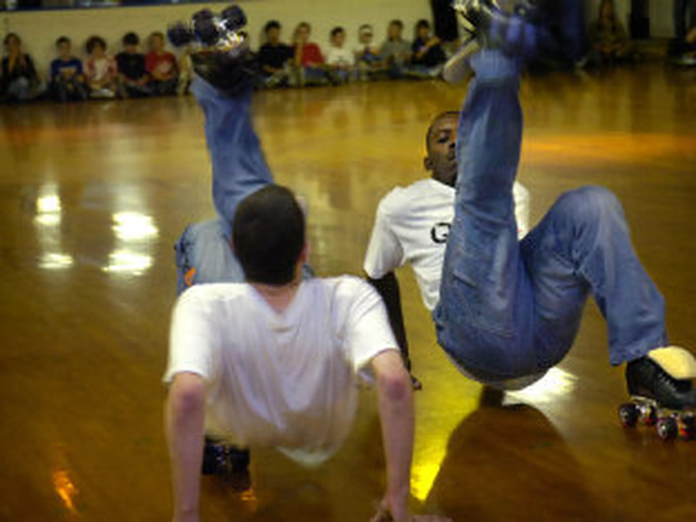
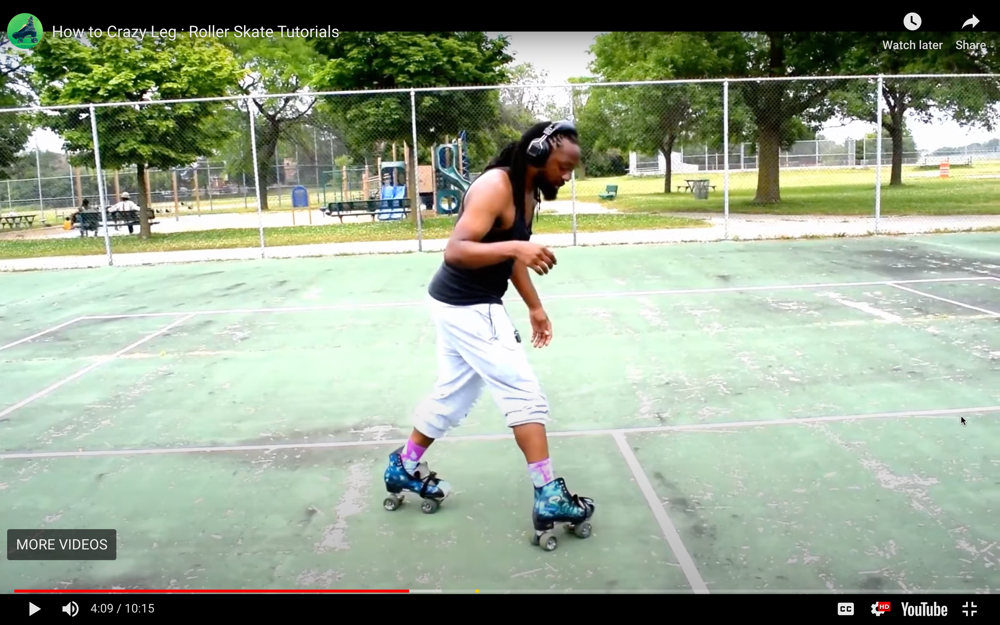

a thematic style of roller skating, very commonly found in the roller rinks. it can be characterized as a combination of many styles of improvisation dance, utilizing elements from:
jam skating is also known as a competitive sport in which performers must dance on skates for a predetermined length of time infront of a panel of judges.
References to Jam Skating found in films such as Roll Bounce(2005) and ATL(2006).
 